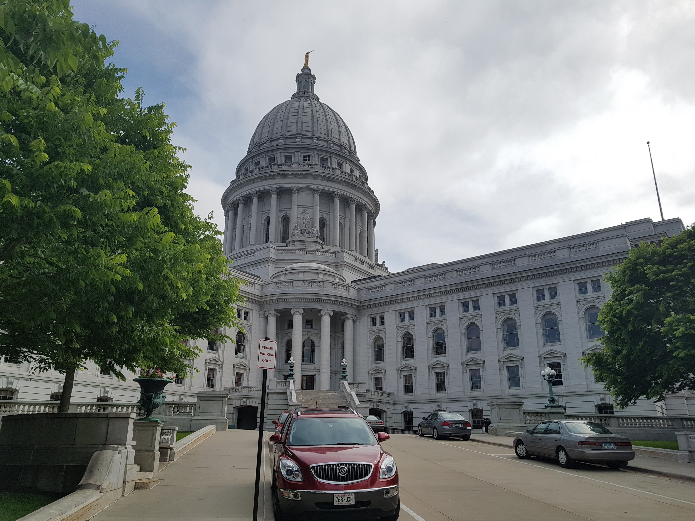

My First App - Awesome!
Great App!
Welcome to my new app developed using Ionic 4!
Show Action Sheet
 Destination
Madison, WI
I visited the capital of Wisconsin last year and I liked the city very much.
During my visit I experienced:
The Capitol Building
Cheese curds
The Great Dane Pub
Destination
Madison, WI
I visited the capital of Wisconsin last year and I liked the city very much.
During my visit I experienced:
The Capitol Building
Cheese curds
The Great Dane Pub